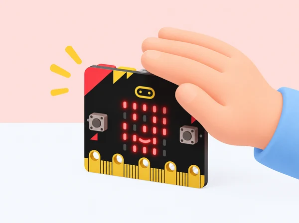

micro:bit: un fanalet que respon a la llum
Llegir la llum ambiental amb la matriu LED i encendre una icona quan l’entorn s’enfosqueix.

🎯 Objectius d’aprenentatge
- Entendre que la matriu LED també pot llegir la llum ambiental.
- Utilitzar una lectura de sensor dins d’una condició i un bucle.
- Ajustar un llindar a partir de proves en diferents espais.
📦 Material necessari
- Placa BBC micro:bit (V1 o V2) o simulador MakeCode.
- Ordinador amb navegador i MakeCode.
- Portapiles opcional per a les proves fora de l’ordinador.
👣 Passos de la pràctica
1. Crear el projecte
Obri MakeCode, crea un projecte nou i comprova la simulació. El projecte oficial de referència anomena la lectura «light level»; en MakeCode, cerca la lectura del nivell de llum a la categoria Entrada.
2. Fer que el fanalet decidisca
Dins de «per sempre», crea una condició: si el nivell de llum és inferior a 100, mostra una icona de lluna o una matriu que represente el fanalet encés; altrament, apaga la matriu amb «neteja la pantalla». El valor 100 és un punt de partida, no un valor universal.
3. Provar i calibrar
Descarrega el programa o usa el simulador. Anota la lectura aproximada en un lloc clar i en un altre més fosc. Tapa suaument la matriu amb la mà i observa què passa. Ajusta el llindar perquè el canvi tinga sentit en l’espai de l’aula.
💡 Consell docent: els LED que mostren la icona també s’utilitzen per estimar la llum. Comprova el comportament amb la placa concreta del centre i deixa un breu interval entre lectures si la pantalla parpelleja.
4. Dissenyar una versió pròpia
Canvia la lluna per una estrella, una casa o un símbol creat per l’alumnat. Si la placa queda connectada a un portapiles, col·loca-la de manera estable i sense tapar-la completament amb materials que puguen escalfar-se.
🧠 Què observem?
La lectura va de 0 (molt fosc) a 255 (molt clar). L’algoritme revisa contínuament el valor i tria una de dues accions. El llindar depén de l’orientació de la placa i de la llum de l’aula; per això cal mesurar i ajustar, no copiar un número sense provar.
Preguntes per a la parella
- Quina diferència heu mesurat entre els dos espais?
- Què passa si el llindar és més alt? I si és més baix?
- Com podem saber si el canvi és causat per la llum o per haver mogut la placa?
♿ Suport i extensió
Facilita un projecte inicial amb el bucle preparat i deixa que cada parella trie la icona o el llindar. Com a extensió, recolliu cinc lectures per espai i compareu-les; manteniu la placa en la mateixa orientació per fer una comparació més justa.
✅ Evidències
Guardeu el projecte MakeCode, la taula de lectures i una explicació del llindar final. La placa només mostra llum en la seua matriu; no és una llum potent per il·luminar una habitació.
🔎 Inspiració i límits de l’adaptació
Proposta pròpia inspirada en Nightlight de micro:bit i en la documentació de lectura del nivell de llum de MakeCode. El recurs oficial explica que la matriu LED actua com a sensor i recomana ajustar el llindar a les condicions locals.